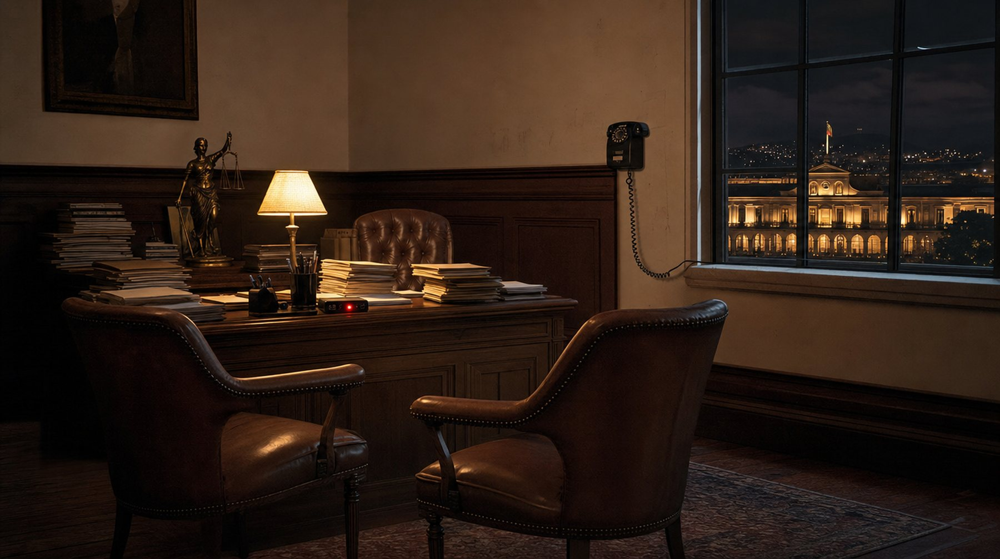
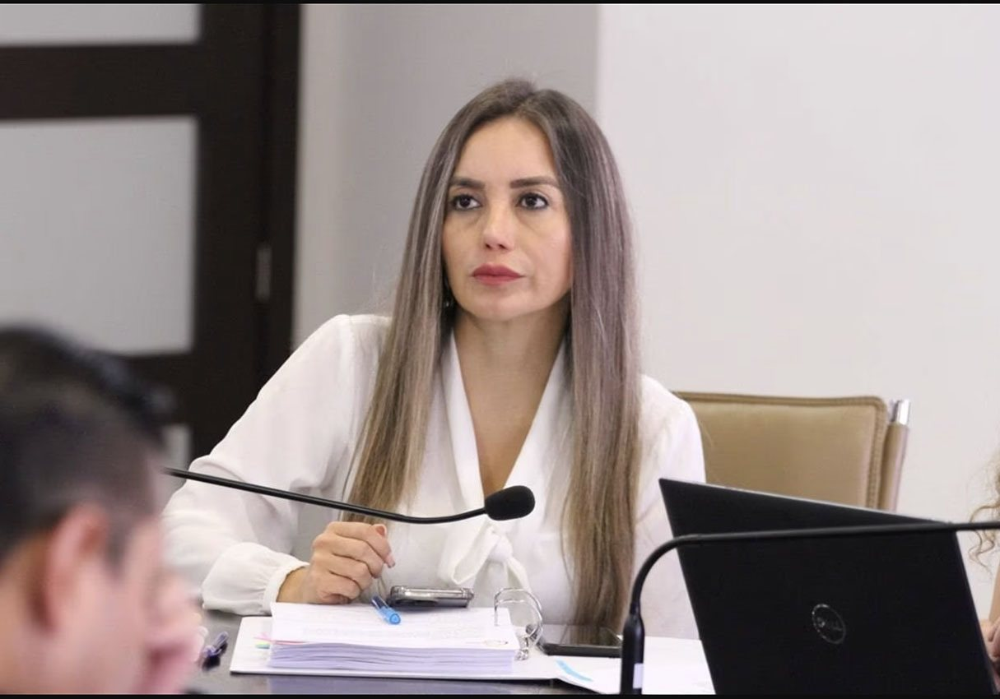
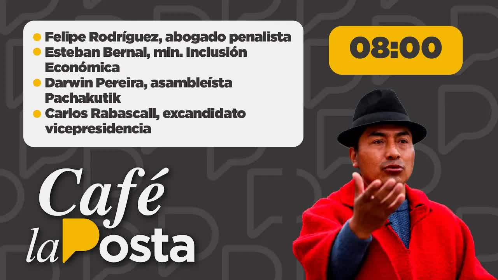
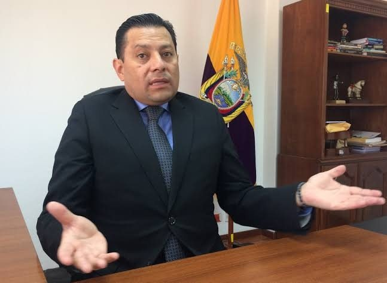
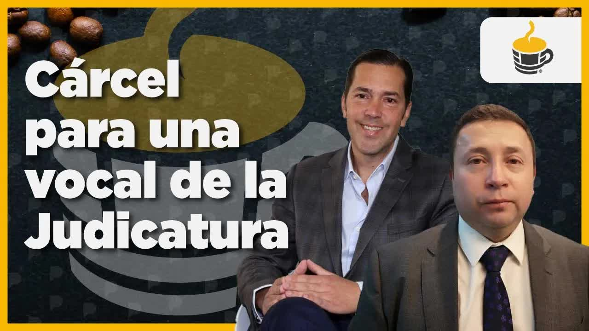
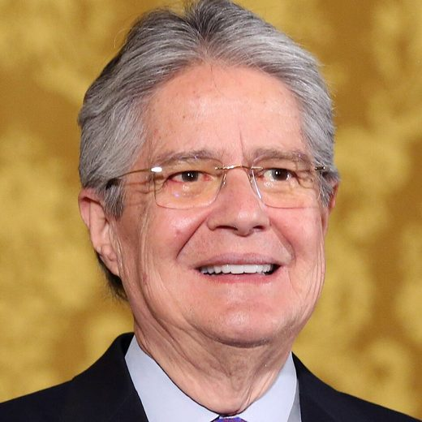

Función Judicial del EcuadorCorte Provincial de Justicia de Pichincha · Despacho de la Presidencia
Fs. 1
La Posta · 15 de junio de 2022 · Tráfico de influencias sobre los jueces
Órdenes desde la Judicatura
Un testigo presencial le entregó a La Posta la grabación de una reunión en el despacho del presidente de la Corte Provincial de Pichincha. Adentro estaban dos vocales del Consejo de la Judicatura, Juan José Morillo y Maribel Barreno, y el juez que debía resolver la apelación de Guadalupe Llori, la presidenta de la Asamblea recién destituida. Morillo le dice al juez que el presidente de la República lo llamó personalmente para pedir apoyo en ese caso. La Posta lo publicó el 15 de junio de 2022, en plena semana del paro nacional. Carondelet negó la llamada. Quince meses después la Fiscalía formuló cargos por tráfico de influencias y un juez ordenó prisión preventiva para Barreno.
Medio La Posta · Boscán y La MoniPublicado 15 de junio de 2022
Razón
Siento por tal que el audio completo y sin edición queda a disposición de la Fiscalía, de la Comisión de Fiscalización y del presidente de la República.
f) Andersson Boscán · La Posta
Razón15 jun 2022
1 jun 2022la reunión en el despacho del juez
15 jun 2022La Posta publica el audio
2 vocalesprocesados como coautores de tráfico de influencias
28 sep 2023orden de prisión preventiva para Maribel Barreno

En cuatro frases
El 15 de junio de 2022, en el cuarto día del paro nacional, La Posta publicó una grabación hecha por un testigo presencial en el despacho del presidente de la Corte Provincial de Pichincha, el juez de mayor rango de la provincia.
En la reunión estaban dos de los cinco vocales del Consejo de la Judicatura, el órgano que nombra, sanciona y destituye jueces: Juan José Morillo y Ruth Maribel Barreno. El tribunal del juez tenía en sus manos la causa de Guadalupe Llori, destituida de la presidencia de la Asamblea el 31 de mayo, y una decisión favorable podía devolverla al cargo.
Morillo le dice al juez que el presidente de la República lo llamó personalmente y le pidió apoyar ese caso, y le traslada un pedido formal para que lo revise y resuelva. Barreno estuvo presente toda la conversación. Carondelet respondió que el presidente no llamó a nadie y que Morillo se tomó su nombre.
El audio abrió denuncias en la Fiscalía, pedidos de comparecencia en la Asamblea y un juicio político. El 28 de septiembre de 2023 un juez formuló cargos por tráfico de influencias contra los dos vocales y el juez, y ordenó prisión preventiva para Barreno. Lasso quedó fuera del proceso.
Capítulo 1
La reunión en el despacho
El 31 de mayo de 2022 la Asamblea Nacional destituyó a Guadalupe Llori de la presidencia del Parlamento. Llori se había sostenido durante semanas con medidas cautelares y acciones de protección que llegaban, según los legisladores, con una velocidad sospechosa: una de ellas dos minutos después de instalarse el Pleno. Su apelación quedó en manos de un tribunal de la Corte Provincial de Pichincha del que formaba parte el presidente de esa corte, el juez de mayor rango de la provincia. Si ese tribunal fallaba a su favor, Llori podía volver a la presidencia de la Asamblea. La única bancada que la había defendido hasta el final era la del Gobierno de Guillermo Lasso.

Anexo 1Maribel Barreno, la funcionaria que aparece en las conversaciones
Al día siguiente, el miércoles 1 de junio, dos vocales del Consejo de la Judicatura entraron al despacho de ese juez. Juan José Morillo, el vocal delegado por la Defensoría del Pueblo, y Ruth Maribel Barreno, la delegada por la Fiscalía. El Consejo tiene cinco integrantes y es el órgano que rige la carrera judicial: nombra, sanciona y destituye jueces. Alguien más estaba en la sala y grabó. Esa persona, que se identificó ante Andersson Boscán como testigo presencial de un posible delito de tráfico de influencias, entregó el audio íntegro a La Posta.

15 jun 2022 · La publicación del audio
Café la Posta: Leonidas Iza libre y el audio de intromisión en la justicia
La grabación empieza con una clase de política. Los vocales le explican al juez que la caída de Llori preocupa al nuevo presidente de la Asamblea, Virgilio Saquicela, y que los cambios pueden complicar a todos. En la Asamblea estaba parqueado un juicio político contra el propio Consejo de la Judicatura, Morillo y Barreno incluidos. Le preguntan al juez si ya revisó la causa de Llori. El juez responde que todavía no. La fuente que entregó el audio aseguró a La Posta que la decisión ya estaba escrita.
El presidente de la República personalmente me ha llamado el día de ayer y me ha pedido que, si es posible apoyar, que se lo apoye en relación a este tema, porque él ve que esta circunstancia no va a ir en buen camino, no va a ir en una línea de derecho.
Juan José Morillo, vocal del Consejo de la Judicatura, en el audio publicado por La Posta el 15 de junio de 2022
Morillo sigue: el Legislativo, dice, se está tomando el poder de manera arbitraria y usó una sesión convocada hace tiempo para tratar la destitución. Entonces yo quiero trasladarles esta inquietud del señor presidente, con toda la confianza que les tengo, le dice al juez. Hay un pedido formal. Yo quisiera que revise el tema, le analicen cómo está la circunstancia y puedan resolver. Barreno no interviene en esa parte, pero está presente desde el saludo hasta la despedida. Los vocales agradecen al juez por recibirlos en la oficina.
La grabación, foja por foja
Acta de lo que se dijo en el despacho
Función Judicial del EcuadorCorte Provincial de Justicia de Pichincha · Despacho de la Presidencia
Fs. 2
Lugar
Despacho del presidente de la Corte Provincial de Pichincha, el juez de mayor rango de la provincia
Fecha
Miércoles 1 de junio de 2022, un día después de la destitución de Guadalupe Llori
Hora
No consta en la grabación
Causa
Apelación de Guadalupe Llori a su destitución de la presidencia de la Asamblea Nacional
Comparecen
Juan José Morillo y Ruth Maribel Barreno, vocales del Consejo de la Judicatura, y el presidente de la Corte Provincial de Pichincha
Registra
Un testigo presencial, que grabó la reunión y entregó el audio íntegro a La Posta
Reconstrucción periodística de la grabación publicada el 15 de junio de 2022
Fs.2
Los vocales Morillo y BarrenoAperturaEn resumen
Le explican al juez que la caída de Guadalupe Llori preocupa al nuevo presidente de la Asamblea, Virgilio Saquicela, y que los cambios pueden complicar a todos. En la Asamblea está parqueado un juicio político contra el propio Consejo de la Judicatura, Morillo y Barreno incluidos.
Fs.2 vta.
Los vocalesSobre la causaEn resumen
Le preguntan al juez si ya revisó la causa de Llori.
Fs.2 vta.
El presidente de la Corte ProvincialRespuestaEn resumen
Responde que todavía no.
La fuente que entregó el audio aseguró a La Posta que la decisión ya estaba escrita.
Fs.3
Juan José MorilloLa llamadaTextual
El presidente de la República personalmente me ha llamado el día de ayer y me ha pedido que, si es posible apoyar, que se lo apoye en relación a este tema, porque él ve que esta circunstancia no va a ir en buen camino, no va a ir en una línea de derecho.
Fs.3 vta.
Juan José MorilloEl pedidoEn resumen
El Legislativo, dice, se está tomando el poder de manera arbitraria y usó una sesión convocada hace tiempo para tratar la destitución. Entonces yo quiero trasladarles esta inquietud del señor presidente, con toda la confianza que les tengo, le dice al juez. Hay un pedido formal. Yo quisiera que revise el tema, le analicen cómo está la circunstancia y puedan resolver.
Fs.4
Maribel BarrenoDurante toda la reuniónEn resumen
No interviene en esa parte, pero está presente desde el saludo hasta la despedida.
Fs.4 vta.
Los vocalesDespedidaEn resumen
Agradecen al juez por recibirlos en la oficina.
Razón
Siento por tal que la grabación fue entregada íntegra a La Posta por una persona que se identificó ante Andersson Boscán como testigo presencial de un posible delito de tráfico de influencias, y que el mismo audio entró después al expediente fiscal por la colaboración de un testigo protegido: la misma persona.
f) La Posta · 15 de junio de 2022
Razón15 jun 2022
5vocales tiene el Consejo de la Judicatura; dos estaban en el despacho
1 jun 2022fecha de la reunión, un día después de la destitución de Llori, según la lectura del asambleísta Esteban Torres
Capítulo 2
El presidente me ha llamado
La Posta publicó el audio la mañana del 15 de junio de 2022, con Leonidas Iza recién liberado y el paro nacional en su cuarto día. Funcionarios del Gobierno le habían sugerido a Boscán que no era el momento. Él respondió al aire que el cálculo político no era responsabilidad suya, que el audio completo y sin edición quedaba a disposición de la Fiscalía, de la Comisión de Fiscalización y del presidente de la República, y que a Morillo lo buscaban desde la medianoche sin respuesta. Barreno tampoco contestó. El presidente del Consejo, Fausto Murillo, consultado por la redacción, guardó silencio.
4:17El audio: la voz de Mario Godoy sobre el fondo de los casos que le tocaba resolver

Anexo 2Morillo, en su despacho
Carondelet sí respondió. La noche anterior La Posta había contactado a la Presidencia y esa mañana un consejero del presidente llamó a Boscán con un mensaje oficial, que él trasladó casi textual.
El presidente de la República no ha llamado al señor Morillo. Ningún subordinado, ni funcionario ni delegado del presidente de la República ha llamado al señor Morillo. El señor Morillo se ha tomado el nombre del presidente de la República. Tomaremos acciones contra el señor Morillo.
Mensaje de Carondelet leído por Andersson Boscán, 15 de junio de 2022
El mismo Gobierno le informó a Boscán que, en una conversación extraoficial, Morillo había reconocido que se reunió con el juez. El presidente de la Corte Provincial, por su parte, difundió un mensaje: estaba enfermo, con licencia desde el día anterior, y no sabía nada de política ni de noticias. El ministro de Inclusión Económica y Social, Esteban Bernal, fue a Café la Posta esa mañana como voz del Gobierno: dijo que no podía ratificar ni verificar el audio, que la Presidencia ya se había pronunciado y que tomaría las acciones pertinentes.
El penalista Felipe Rodríguez analizó la grabación en el programa. Podía estar configurándose un tráfico de influencias, dijo, aunque el vocabulario era inteligente: Morillo no dicta el texto de la sentencia, pero insinúa que las medidas contra Llori fueron irregulares y pide ayudarla. El detalle de fondo es que el vocal es el superior disciplinario del juez: cualquier queja contra ese juez termina resuelta en el pleno del Consejo, con los mismos vocales que fueron a pedirle una mano.
Le estás diciendo a un juez: dame una mano. Y ese juez tiene que pensárselo, porque puede perder su cargo, que está en manos de quien le ha pedido que le dé una mano.
Felipe Rodríguez, abogado penalista, en Café la Posta, 15 de junio de 2022
La metida de mano en la justicia es aborrecible venga de donde venga. Un consejero de la Judicatura dispuesto a deshonrar su institución, su nombre, su apellido, su cargo, es un tipo que no tiene que estar ahí. Es un tipo que tiene que estar delante de un fiscal.
Andersson Boscán, 15 de junio de 2022
0respuestas de Morillo, Barreno y Fausto Murillo a La Posta el día de la publicación.
Capítulo 3
Denuncias, comparecencias y juicio político
Las reacciones llegaron en minutos. El asambleísta Ricardo Vanegas, de Pachakutik, habló de una clara intromisión en la administración de justicia ejercida por Morillo y Barreno y anunció que pediría a la fiscal general que investigara. Esteban Torres, jefe de la bancada socialcristiana, preguntó qué esperaba la Fiscalía para detener a los dos consejeros. Jorge Abedrapo, también del PSC, escribió que los querían tener de rodillas. Un asambleísta presentó un documento formal a Fernando Villavicencio, presidente de la Comisión de Fiscalización, para que Morillo y Barreno comparecieran. Darwin Pereira, de Pachakutik, dijo en el programa que el audio confirmaba lo que su bancada venía denunciando: jueces de bolsillo.
En los comentarios, seguidores enojados acusaron a La Posta de hacerle el juego al correísmo. Boscán contestó al aire.
Yo no juego ni para el correísmo ni para el lassismo ni para ningún ismo. El único ismo que conozco es el periodismo. Yo no mandé a alguien de La Posta a convencer a un juez de algo que no debía. Reclámenle al señor Morillo y a quien le haya pedido al señor Morillo que vaya a hacer tremenda estupidez.
Andersson Boscán, 15 de junio de 2022
Al día siguiente, 16 de junio, Morillo seguía sin aparecer. Había sido anunciado como entrevistado en Ecuavisa y no llegó. Esteban Torres contó en Café la Posta que él había denunciado el lunes 13 de junio un rumor de pasillo que iba de la Asamblea a los juzgados: que las medidas cautelares de Llori no se explicaban sin la anuencia de alguien arriba. El audio, dijo, lo comprobaba. Torres habló de dos posibles delitos, asociación ilícita y tráfico de influencias, y de dos denuncias ya presentadas en la Fiscalía. Añadió otro rumor: que se habría dispuesto borrar las cámaras del 1 de junio en el edificio del Consejo de la Judicatura, en la avenida 12 de Octubre.
El audio de ayer es uno de los grandes escándalos de la República en los últimos años. Un escándalo terrible que no se puede quedar sin investigación.
Esteban Torres, asambleísta del PSC, en Café la Posta, 16 de junio de 2022
En lo político, los vocales fueron llamados a tres comisiones de la Asamblea. La sanción más drástica, el juicio político contra el Consejo de la Judicatura, debía abrirse ese viernes en la Comisión de Fiscalización, y Torres anunció que su bancada lo impulsaría. Boscán resumió el momento: había una nueva mayoría de más de cien votos en la Asamblea, el primer juicio político en cola era el de la Judicatura donde estaban Morillo y Barreno, y el juez que tenía la decisión escrita iba a tener que decidir si la presentaba o escribía otra.
2denuncias presentadas en la Fiscalía tras el audio, según Esteban Torres
3comisiones de la Asamblea llamaron a comparecer a los vocales
Capítulo 4
Quince meses después, orden de prisión
Cuando La Posta publicó el audio, el Gobierno y la Judicatura le bajaron el perfil y Boscán dudó de que la Fiscalía llegara a algún lado. El caso siguió su curso mientras el Consejo de la Judicatura entraba en su peor crisis. En septiembre de 2023, con Wilman Terán en la presidencia del organismo, el penalista Ramiro García denunció ante la fiscal Diana Salazar que la resolución con la que el Consejo destituyó al juez Walter Macías contenía un hecho falso: decía que solo tres vocales votaron, cuando el video mostraba a los cinco. Barreno y Morillo estaban entre los que se abstuvieron. Boscán contó entonces cuatro de los cinco vocales investigados por algún tipo de delito.
El 27 de septiembre de 2023, a las diez de la mañana, se instaló la audiencia de formulación de cargos contra Maribel Barreno, Juan José Morillo y el juez con el que hablaban en el audio, el presidente de la Corte Provincial de Pichincha, Vladimir Jhayya. Cerca de la una de la mañana del 28 el juez Walter Macías resolvió: los dos vocales procesados como coautores de un presunto tráfico de influencias, el juez como cómplice, y prisión preventiva únicamente para Barreno, con orden de captura. Barreno había iniciado antes una acción legal contra la fiscal general por acoso y hostigamiento.

28 sep 2023 · Formulación de cargos y prisión preventiva
La justicia ordena prisión para la vocal Maribel Barreno
Cuando publicamos el material, el Gobierno y la Judicatura le bajaron el perfil a unos niveles importantes, y yo desconfiaba de que la Fiscalía pudiera llegar algún día a algo. Al final estamos llegando a un llamamiento a juicio a dos de los personajes más importantes de la justicia por una publicación periodística.
Andersson Boscán, 28 de septiembre de 2023
Dos nombres quedaron fuera. Guillermo Lasso, el presidente a quien Morillo invoca en la grabación, nunca fue investigado por su presunta participación, pese a que el correísmo, a través de la asambleísta Viviana Veloz, había pedido en su momento que se lo incluyera. Guadalupe Llori, la beneficiaria de la gestión, tampoco fue vinculada. El audio entró al expediente fiscal por la colaboración de un testigo protegido: la misma persona que lo entregó a La Posta.
Me parece obsceno llevarte a prisión preventiva a esta gente, y te estoy hablando de Maribel Barreno, gente que hemos denunciado nosotros. La venganza de la Fiscalía: si había alguien con quien tenía bronca la fiscal general en la Judicatura era con Maribel Barreno.
Andersson Boscán, 28 de septiembre de 2023
Esa misma mañana, con la orden de captura vigente, Barreno presentó una solicitud de vacaciones en el Consejo de la Judicatura desde ese jueves hasta el 27 de octubre. Boscán escribió al juez Macías y a la propia Barreno para pedir sus reacciones; ninguno respondió. En el programa quedó abierta la pregunta que a Boscán más le interesaba: qué diría Morillo en el juicio, si sostendría que actuó por su propia voluntad o si señalaría a quien, según él, lo mandó.
27 oct 2023fecha hasta la que Maribel Barreno pidió vacaciones el día en que se ordenó su prisión preventiva.
Capítulo 5
Cómo terminó
La grabación que La Posta puso al aire el 15 de junio de 2022 fue la primera prueba directa de cómo se conseguían las decisiones judiciales que sostuvieron a Guadalupe Llori en la presidencia de la Asamblea: dos vocales del organismo que controla a los jueces, en el despacho del juez que debía resolver, pidiendo apoyo en nombre del presidente de la República. Ni siquiera en el correísmo, dijo Boscán ese día, se había escuchado a alguien afirmar que la orden venía del presidente.
El caso produjo denuncias en la Fiscalía, comparecencias en la Asamblea, un juicio político contra el Consejo y, quince meses después, un proceso penal por tráfico de influencias contra los dos vocales y el juez, con prisión preventiva para Barreno. El proceso sigue abierto. Guillermo Lasso terminó su mandato sin haber sido investigado por este caso, y Morillo, el hombre que dijo hablar en su nombre, todavía no ha explicado en público por qué fue a ese despacho.
En cifras
Los números del expediente
5vocales tiene el Consejo de la Judicatura; dos fueron al despacho del juez
3interlocutores en el audio: Morillo, Barreno y el presidente de la Corte Provincial de Pichincha
2denuncias presentadas en la Fiscalía tras la publicación, según Esteban Torres
15 mesesentre la publicación del audio y la formulación de cargos
1orden de prisión preventiva: solo para Maribel Barreno
Lo que dejó el audio
Dos vocales procesados, un presidente intocado
Maribel BarrenoProcesada como coautora; prisión preventiva desde el 28 de septiembre de 2023
Juan José MorilloProcesado como coautor de tráfico de influencias
Presidente de la Corte Provincial de PichinchaProcesado como cómplice
Guillermo LassoNunca investigado por este caso
Guadalupe LloriFuera del proceso
Denuncias y juicio políticoAbiertos por esta revelación
Causa abierta
Actualizado el 5 de septiembre de 2026
Diligencias pendientes
Preguntas sin responder
Llamó o no Guillermo Lasso a Juan José Morillo el día anterior a la reunión, como afirma el vocal en el audio
Quién escribió la decisión que, según la fuente, ya estaba redactada antes de que el juez revisara la causa de Llori
Se borraron las cámaras del edificio del Consejo de la Judicatura del 1 de junio de 2022
Por qué la Fiscalía nunca investigó al presidente cuyo nombre se invoca en el audio
Cronología
Paso a paso
31 may 2022
Cae Llori
La Asamblea destituye a Guadalupe Llori de la presidencia. Su apelación queda en un tribunal de la Corte Provincial de Pichincha.
1 jun 2022
La reunión
Morillo y Barreno visitan al presidente de la Corte Provincial. Un testigo presencial graba. Morillo dice que el presidente lo llamó el día anterior.
13 jun 2022
El rumor
Esteban Torres denuncia en la Asamblea una metida de mano en las medidas cautelares de Llori.
15 jun 2022
La Posta publica el audio
Carondelet niega la llamada y anuncia acciones contra Morillo. Asambleístas piden investigación y comparecencias.
16 jun 2022
Dos denuncias
Torres habla de dos denuncias en la Fiscalía por asociación ilícita y tráfico de influencias, y de un juicio político por abrirse.
31 ago 2023
Denuncia por falsedad
Ramiro García denuncia la resolución con la que el Consejo destituyó al juez Walter Macías. Barreno y Morillo votaron en abstención.
27 sep 2023
Formulación de cargos
La audiencia contra Barreno, Morillo y el juez se instala a las 10:00 y dura hasta la madrugada.
28 sep 2023
Prisión preventiva
El juez Walter Macías procesa a los vocales como coautores y al juez como cómplice. Orden de captura para Barreno, que ese día pide vacaciones hasta el 27 de octubre.
Comparecientes y citados
Quién es quién
JJ
Procesado como coautor de tráfico de influencias
Juan José Morillo
Vocal del Consejo de la Judicatura, delegado de la Defensoría del Pueblo. Su voz dice en el audio que el presidente lo llamó.
RM
Prisión preventiva desde el 28 de septiembre de 2023
Ruth Maribel Barreno
Vocal del Consejo de la Judicatura, delegada de la Fiscalía. Presente durante toda la reunión.
VJ
Procesado como cómplice
Vladimir Jhayya
Presidente de la Corte Provincial de Pichincha. Recibió a los vocales en su despacho; su tribunal tenía la causa de Llori.

Nunca investigado
Guillermo Lasso
Presidente de la República. Según Morillo, lo llamó para pedir apoyo a Llori. Carondelet lo negó.
GL
Fuera del proceso
Guadalupe Llori
Expresidenta de la Asamblea, destituida el 31 de mayo de 2022. Beneficiaria de la gestión.
FM
No respondió a La Posta
Fausto Murillo
Presidente del Consejo de la Judicatura en 2022.
WM
Dictó la prisión preventiva de Barreno
Walter Macías
Juez que formuló cargos contra los vocales en septiembre de 2023.
ET
Dos denuncias en la Fiscalía
Esteban Torres
Jefe de la bancada del PSC. Denunció el rumor antes del audio e impulsó el juicio político.
Fotos vía Wikimedia Commons. Guillermo Lasso: Presidencia de la República del Ecuador (Public domain).
Descargos
Respuestas y reacciones
Carondelet
El presidente no llamó a Morillo; ningún subordinado, funcionario ni delegado lo hizo. Morillo se tomó el nombre del presidente. Anunció acciones contra él. Un mensaje del Gobierno habló de lecturas absolutamente falsas y de acciones legales contra los funcionarios que se hubieran tomado el nombre del presidente para mentir.
Juan José Morillo
No respondió a La Posta, que lo buscó desde la medianoche del 14 de junio de 2022, ni acudió a una entrevista anunciada en Ecuavisa. Según el Gobierno, en una conversación extraoficial reconoció que se reunió con el juez.
Maribel Barreno
No respondió a La Posta en junio de 2022 ni el 28 de septiembre de 2023, cuando Boscán le escribió tras la orden de prisión preventiva.
Presidente de la Corte Provincial de Pichincha
Difundió un mensaje el 15 de junio de 2022: estaba enfermo, con licencia desde el día anterior, y no sabía nada de política ni de noticias.
Esteban Bernal, ministro de Inclusión Económica y Social
Dijo en Café la Posta que no podía ratificar ni verificar el audio, que la Presidencia ya había negado la llamada y que tomaría las acciones pertinentes.
Fausto Murillo, presidente del Consejo de la Judicatura
Consultado por La Posta el 15 de junio de 2022, no respondió.
Anexos
Todos los videos
15 jun 2022 · La publicación del audio
Café la Posta: Leonidas Iza libre y el audio de intromisión en la justicia
Café la Posta: Leonidas Iza libre y el audio de intromisión en la justicia
15/06/2022 · 15.443 palabras
todo esto hay que sumar un audio que la posta publicará hoy en muy pocos minutos y el cálculo serán unos 15 minutos haremos público un audio relacionado el consejo de la judicatura relacionado a una intromisión directa en la justicia que salpica incluso al presidente de la republica malena el fuego nos dieran algunos no responsabilidad los nuestros del cálculo político de eso que se encarga el ministro del gobierno q…
anunciada por la mayoría de movimientos sociales muy diversas convocatorias esto ya no es solamente el movimiento indígena estudiar no es solamente leonidas iza jodida la cosa juan josé morillo se lo está buscando a el consejero de la judicatura no aparece no aparece ha sido anunciado esta mañana en ecuavisa como entrevistado y normalizado la gente cree que madre me llama mi hijito puedan entrevistar a morillo en ecu…
Coches bomba, jueces denunciados y amenazas del caso León de Troya
01/09/2023 · 17.236 palabras
protección del mercado cuidando tu vida Tu patrimonio y tu bienestar estamos enfocados en cuidarte todos los días del año para que vivas tu presente Mientras construyes tu futuro con la certeza que estamos junto a ti somos Kaiser 24 años cuidando de ti porque la experiencia es seguridad hola hola hola hola hola hola hola bienvenidos todos Cómo están no sé si me escuchan chemitas Dame señales de vida si están por ahí …
La justicia ordena prisión para la vocal Maribel Barreno
28/09/2023 · 11.419 palabras
febrero que sacamos del Gran informe antes de eso no O sea después de eso no recuerdo un momento así de de puntual y no es puntual o sea 10 minutos tarde pero es lo que más se puede hacer y ya está con nosotros conectado Anderson moscana quien le quiero preguntar qué tal estuvo tu noche Anderson Cómo estás querido audiencia jueves 28 de septiembre son las 8:10 de la mañana en territorio ecuatoriano mi noche ha estado…
Transcripciones de los subtítulos automáticos de cada programa. No están corregidas a mano: sirven para buscar una frase y llegar al minuto exacto del video, no como cita textual literal.
Después
Qué pasó después
Junio de 2022
Fiscalía y Asamblea
Dos denuncias en la Fiscalía, comparecencias ante tres comisiones y un juicio político contra el Consejo de la Judicatura impulsado por el PSC.
Septiembre de 2023
Proceso penal
Formulación de cargos por tráfico de influencias contra Barreno, Morillo y el juez. Prisión preventiva para Barreno. Lasso y Llori, fuera del expediente.
2023 en adelante
Juicio abierto
El proceso contra los vocales continúa. Morillo no ha explicado públicamente por qué dijo hablar en nombre del presidente.
El nombre del presidente de la Corte Provincial de Pichincha aparece deformado en los subtítulos de junio de 2022 y como Vladimir Jhayya en el programa de septiembre de 2023; se usa esta última forma. Los subtítulos alternan Morillo y Murillo para el vocal Juan José Morillo; Fausto Murillo es el presidente del Consejo en 2022 y es otra persona. La fecha de la reunión, 1 de junio de 2022, es la lectura que hizo el asambleísta Esteban Torres del audio. Las citas del audio se transcriben de los programas del 15 de junio de 2022 y 28 de septiembre de 2023. Los programas de junio de 2025 sobre jueces que beneficiaron al crimen organizado no tratan este caso y no se incluyen. Por verificar fuera de los videos: el estado actual del juicio contra Barreno y Morillo y el resultado del juicio político de 2022.